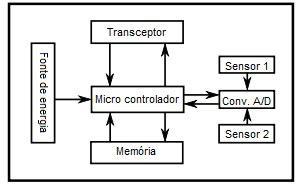

<section>
  <div class="content">
    <h1 class="title">Conceito</h1>
    <h3>Estrutura e Componentes de uma RSSF</h3>
    <p>Os principais componentes que formam uma rede de sensores sem fio são: nodos sensores e nodos de comunicação com outras redes (ou gateways).</p>
    <h3>Nodos sensores</h3>
    <p>Os nodos sensores são os principais componentes de uma RSSF. São neles que estão localizados os sensores responsáveis por captar dados do ambiente. Além disso, estes nodos possuem estruturas de memória, processamento, comunicação e energia a fim de serem capazes de trabalhar em cima de uma informação sensorial e transmiti-la para outros nodos.</p>
    <div class="img">
      
    </div>
    <h3>Sensoriamento</h3>
    <p>A parte de sensoriamento de um nodo sensor é realizada exclusivamente pelos sensores que o compõe.</p>
    <p>Estes sensores são os responsáveis por coletar dados quaisquer de um ambiente. Eles produzem um sinal analógico de resposta que corresponde à medida de uma variação física ambiental qualquer. Este sinal, por sua vez, é digitalizado por meio de um conversor A/D e enviado até o controlador para ser processado.</p>
    <p>Os sensores possuem, em geral, algumas características em comum: são pequenos, consomem pouca energia, são autônomos e adaptativos ao ambiente.</p>
    <h3>Computação e processamento</h3>
    <p>A computação e o processamento englobam a memória e o controlador.</p>
    <p>O controlador, geralmente, acaba sendo um micro controlador por este ter um preço menor, ser mais flexível e consumir pouca energia, mas também podem ser utilizados microprocessadores ou processadores de sinais digitais. As funções básicas do controlador são: processar dados advindos dos sensores e controlar a atividade de outros componentes do nodo.</p>
    <p>A memória é utilizada para armazenar dados dos sensores ou já processados e/ou armazenar a memória de programa usada para programar o micro controlador. Geralmente, é usada uma que já venha embarcada com o micro controlador ou uma memória Flash, pelo seu baixo custo e alta capacidade de armazenamento.</p>
    <h3>Comunicação</h3>
    <p>Os dispositivos receptores e transmissores de um nodo sensor se encontram em um só: o transceptor. Este transceptor é responsável por fazer a comunicação com outros nodos sensores ou gateways.</p>
    <p>Devido à algumas dificuldades da comunicação ótica (por lasers) ou por infra-vermelho, geralmente, são utilizadas ondas de rádio nas frequências de comunicação livres de licença. Pelo baixo fornecimento de energia à qualquer RSSF, é recomendável sempre deixar o transceptor desligado enquanto ele não estiver nem nas funções de transmitir, nem receber.</p>
    <h3>Energia</h3>
    <p>Como estamos tratando aqui de redes de sensores sem fio, redes, estas, com nodos que muitas vezes são colocados em lugares difíceis de serem alcançados, é necessário pensar em uma fonte de energia móvel e que sempre seja capaz de manter um nível adequado de força para o nodo. Geralmente, são utilizadas baterias ou capacitores. As baterias podem ou não ser recarregáveis e, hoje em dia, dispõem cada vez mais de dispositivos que se utilizam de recursos físicos para renovar a energia, como fontes solares, vibrações, etc.</p>
    <h3>Gateways</h3>
    <p>Outra parte fundamental na estrutura da maioria das RSSFs são os gateways. Estes também são nodos, assim como os nodos sensores, porém possuem uma característica e função especial, a de conectar a RSSF com algum outro elemento externo. Em geral, as RSSFs se conectam com outras redes de área local (LAN) ou redes de longa distância (WAN) de maneira a fazer com que os dados sensoriais possam ser reprocessados com mais recursos.</p>
  </div>
</section>
